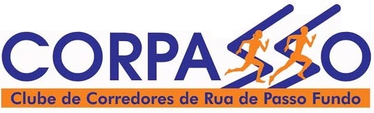

Tradição, saúde e inclusão social no pedestrianismo desde 1985.
Saiba MaisFundado em 1985, o CORPASSO (Clube de Corredores de Rua de Passo Fundo) é uma das instituições esportivas mais tradicionais do Planalto Médio gaúcho. Mais do que incentivar a prática esportiva, a entidade atua como um pilar de integração para atletas amadores e profissionais, promovendo a saúde, a qualidade de vida e fortalecendo o calendário local de pedestrianismo.
Nascemos em meados da década de 80, período em que o atletismo de rua começou a ganhar força para além dos grandes clubes tradicionais no Rio Grande do Sul, criando uma comunidade forte e unida em Passo Fundo.
O CORPASSO orgulha-se de ser um grande parceiro histórico da Prefeitura Municipal e do Sesc Passo Fundo na organização, suporte técnico e definição do calendário oficial de corridas do município.
Nosso compromisso vai além do pódio. Um grande marco de nossa trajetória ocorre no Circuito Municipal de Corrida de Rua, onde diretores e membros atuam voluntariamente como atletas-guia para corredores com deficiência visual, garantindo acessibilidade real no esporte.